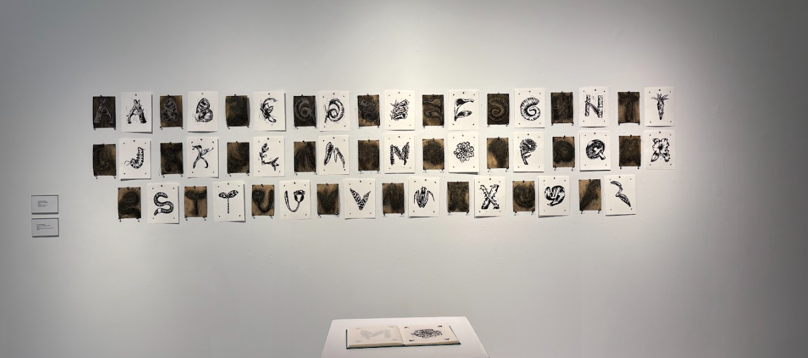

Welcome to my portfolio, where art and film intersect to explore human connection, nature, and technology.
My name is Charlie Schwartz, an artist and filmmaker passionate about meaningful communication that connects human experiences with thoughtful visual and digital storytelling. My work explores themes of connection, visibility, nature, and technology. Whether I’m behind the camera or working in visual arts, I aim to create work that resonates with honesty and intention.
Welcome to my portfolio. Here you’ll find a selection of my work. Explore my projects to learn more about what I do.
